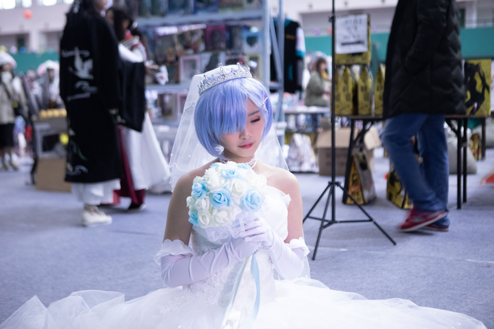
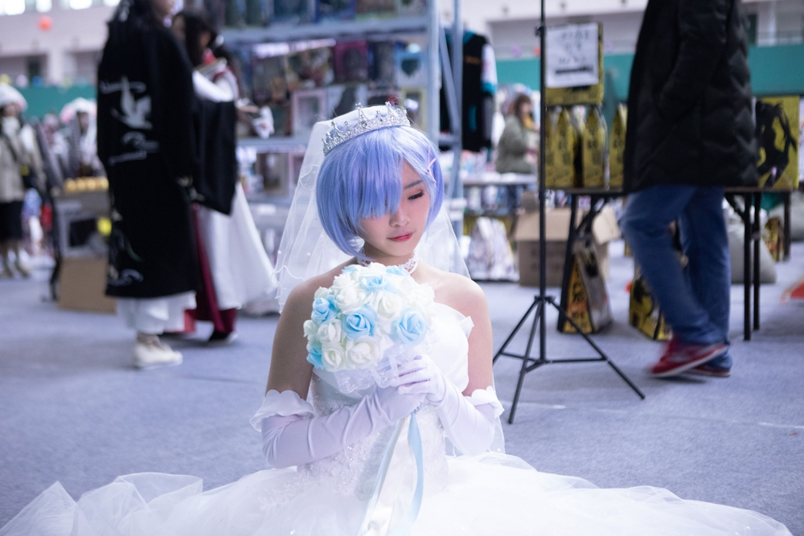

更新+漫展返图看妹子
因为要凑字数，就把之前更新的章节里的【作者的话】栏目的内容发布在这里，反正很多人也不想在征文看到这个。
首先之前的汉服问题贴……最近我意识到我错了，不是我对自己的态度反思，而是，我突然意识到，在争山正的，99%是女生的吧，而且是小女生，这些女生有一个特征就是事多且莫名其妙，我跟女生较什么真。
都说真正的袍子不会去撕逼见山骂人指责指导撕衣服什么的……
和真正的假假的没关系，撕不撕，纯粹是个人素质的问题。
起码，不断在强调真袍子不会做那些无礼的事情的人，不会是那种人。
修身齐家治国平天下。
先修身啊，那些汉服娘……
另外：书评里有一条评论说我塑造角色失败，好吧，我承认我确实没有塑造什么非常有个性的角色，但也不至于很差吧……
心里不舒服之下，去翻了翻他的资料，嗯，作者，嗯，写刀剑的，嗯？三页里两页没有好评，全部在批评刀剑桐人的，另外，额，似乎失恋了。
“每一个陪伴过他的女孩”这个用词，很有深度，说永别什么的……卧槽，既然你没死那女孩们怎么了？
一千个人一千个哈姆雷特没错，但是感觉这人在发泄后，本来就不爽的我，更加心塞了。
我不太想塑造咆哮帝之类的角色，如果这才是个性的话，我的女儿们，确实过于冷静坦然淡薄，龙套们也大都智商都在线。
不知道为什么，我真的就是特别不爽。
最后，靠，我突然发现，书评区发书评的，大部分都有作者标记。
我似乎就是狼群里的哈士奇！
嗯，结束，上图
 
我被认为只会换背景，所以，嗯，这次我修脸，有些脸看下去有点奇怪，好像主要是光影的问题，我没有带闪光灯，纯粹靠自然光，下次我还是带灯进去吧。
2.16台州椒江DY展蹭拍。
蹭拍，我是专业的，绝不多说一个字。
总有一天，我要赚到路费去上海广州的大展